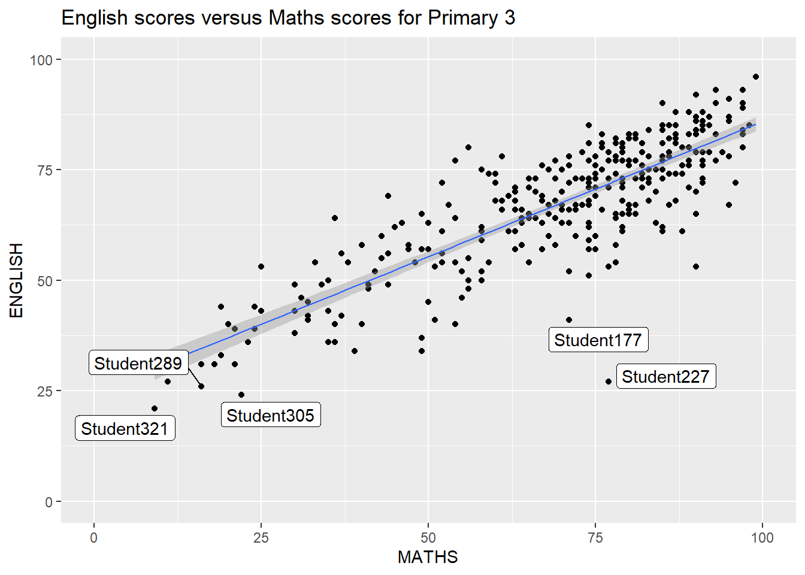

pacman::p_load(ggrepel, patchwork,
ggthemes, hrbrthemes,
tidyverse)Hands-on_Ex02
1.Getting Start
1.1 load packages
1.2 load data
exam_data<- read_csv('data/Exam_data.csv', show_col_types = FALSE)2. ggrepel
Using geom_label makes labels overlap
ggplot(data = exam_data,
aes(x = MATHS, y = ENGLISH))+
geom_point()+
geom_smooth(method=lm, size=0.5)+
geom_label(aes(label = ID))+
coord_cartesian(xlim=c(0,100),
ylim=c(0,100))+
ggtitle("English scores versus Maths scores for Primary 3")Warning: Using `size` aesthetic for lines was deprecated in ggplot2 3.4.0.
ℹ Please use `linewidth` instead.`geom_smooth()` using formula = 'y ~ x'Using geom_label_repel can avoid the overlapping problem
ggplot(data = exam_data,
aes(x = MATHS, y = ENGLISH))+
geom_point()+
geom_smooth(method=lm, size=0.5)+
geom_label_repel(aes(label = ID))+
coord_cartesian(xlim=c(0,100),
ylim=c(0,100))+
ggtitle("English scores versus Maths scores for Primary 3")`geom_smooth()` using formula = 'y ~ x'Warning: ggrepel: 317 unlabeled data points (too many overlaps). Consider
increasing max.overlaps
3.ggthemes
ggplot2 comes with eight built-in themes, they are: theme_gray(), theme_bw(), theme_classic(), theme_dark(), theme_light(), theme_linedraw(), theme_minimal(), and theme_void().
ggplot(data = exam_data,
aes(x=MATHS))+
geom_histogram(bins = 20,
boundary = 100, #only show maths score with max 100
color = 'grey25',
fill = 'grey90')+
theme_grey()+
ggtitle("Distribution of Maths scores") 
ggthemesprovides other choices
ggplot(data = exam_data,
aes(x=MATHS))+
geom_histogram(bins = 20,
boundary = 100, #only show maths score with max 100
color = 'grey25',
fill = 'grey90')+
ggtitle("Distribution of Maths scores")+
theme_economist()
4. herbthemes
hrbrthemes package provides a base theme that focuses on typographic elements, including where various labels are placed as well as the fonts that are used.
ggplot(data=exam_data,
aes(x = MATHS)) +
geom_histogram(bins=20,
boundary = 100,
color="grey25",
fill="grey90") +
ggtitle("Distribution of Maths scores") +
theme_ipsum()
axis_title_sizeargument is used to increase the font size of the axis title to 18,base_sizeargument is used to increase the default axis label to 15, andgridargument is used to remove the x-axis grid lines.
ggplot(data=exam_data,
aes(x = MATHS)) +
geom_histogram(bins=20,
boundary = 100,
color="grey25",
fill="grey90") +
ggtitle("Distribution of Maths scores") +
theme_ipsum(axis_title_size = 18,
base_size = 15,
grid = "Y")
5. patchwork
It is not unusual that multiple graphs are required to tell a compelling visual story. In this section, you will learn how to create composite plot by combining multiple graphs. First, let us create three statistical graphics by using the code chunk below.
p1 <- ggplot(data=exam_data,
aes(x = MATHS)) +
geom_histogram(bins=20,
boundary = 100,
color="grey25",
fill="grey90") +
coord_cartesian(xlim=c(0,100)) +
ggtitle("Distribution of Maths scores")p2 <- ggplot(data=exam_data,
aes(x = ENGLISH)) +
geom_histogram(bins=20,
boundary = 100,
color="grey25",
fill="grey90") +
coord_cartesian(xlim=c(0,100)) +
ggtitle("Distribution of English scores")p3 <- ggplot(data=exam_data,
aes(x= MATHS,
y=ENGLISH)) +
geom_point() +
geom_smooth(method=lm,
size=0.5) +
coord_cartesian(xlim=c(0,100),
ylim=c(0,100)) +
ggtitle("English scores versus Maths scores for Primary 3")“+” Two-Column Layout,
“/” Two-Row Layout,
“|” operator to place the plots beside each other,
“()” operator the define the sequence of the plotting.
p1+p2
(p1/p2)|p3`geom_smooth()` using formula = 'y ~ x'
In order to identify subplots in text, patchwork also provides auto-tagging capabilities as shown in the figure below.
((p1 / p2) | p3) +
plot_annotation(tag_levels = 'I')`geom_smooth()` using formula = 'y ~ x'
Beside providing functions to place plots next to each other based on the provided layout. With inset_element() of patchwork, we can place one or several plots or graphic elements freely on top or below another plot.
p3+inset_element(p2,
left = 0.02,
bottom = 0.7,
right = 0.5,
top = 1)`geom_smooth()` using formula = 'y ~ x'
Figure below is created by combining patchwork and theme_economist() of ggthemes package discussed earlier.
patchwork <- (p1 / p2) | p3
patchwork & theme_economist()`geom_smooth()` using formula = 'y ~ x'